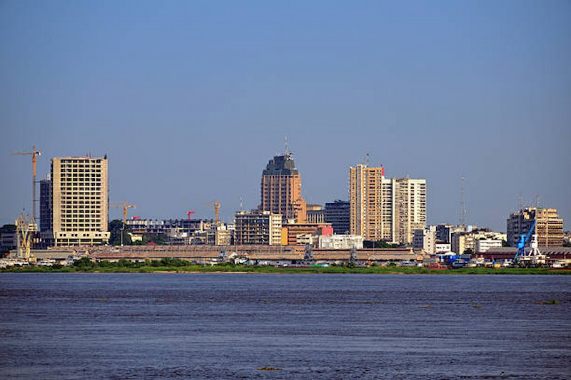

Bienvenue sur Ndako243, votre plateforme dédiée à l’immobilier en République Démocratique du Congo. Ici, nous vous aidons à trouver facilement des maisons, appartements ou terrains adaptés à vos besoins, que ce soit pour la location, l’achat ou la vente. Grâce à une interface simple et accessible, Ndako243 vous fait gagner du temps et vous connecte directement avec des offres fiables et variées. Notre objectif est de rendre le secteur immobilier plus transparent, rapide et sécurisé pour tous. Faites confiance à Ndako243 pour concrétiser vos projets immobiliers et profitez d’une expérience pratique, moderne et efficace pour trouver le logement qui vous correspond.
